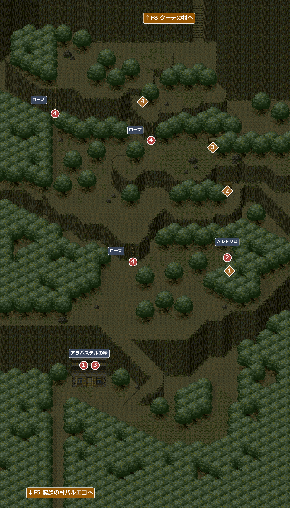
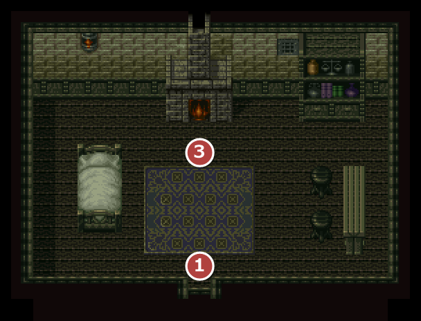

FIELD7
バルエコの山道
エンカウント率0.78%バルエコの北の門から続く山道。ロープで崖を登って北へ抜ける。
名前 建物・場所→ ほかの FIELD へ1メインイベント1宝箱・落ちている物

エンカウント
1歩ごとに 0.78%(平均 128 歩に1回)。戦闘になったときに出る組と、その確率:
| ID | 確率 | 前列 | 後列 |
|---|---|---|---|
| 13 | 33.3% | アグリーパー×2 | レッドベアー |
| 14 | 11.1% | レッドベアー | － |
| 15 | 33.3% | アグリーパー×3 | － |
| 16 | 22.2% | レッドベアー×2 | － |
イベント
1
アラバステルの家
場所: アラバステルの家(部屋701)に入ったとき
アイリスの顔なじみのアラバステルの家。子供の頃からずっと言われ続けてきた「オード探し」に旅立つアイリスを、アラバステルは気づかい、手を貸してくれる。この先の北への道は荒れ果てていて相応の装備が要ること、近くの野原に生えているムシトリ草を持ってくれば薬を作ってくれることを教えてもらえる。
次へムシトリ草を取りに行く(②)。
2
ムシトリ草
場所: 山道の東の野原(X90-96 Y105-107)
近くを通ると、ホイヒューが虫の羽音に気づく。①の後で草を調べて「草を取る」を選ぶと、あたりの虫がいっせいに襲いかかってくる。
草を取るたびにパーティー全員が虫に刺され、全員の HP が 5 減る(1 未満にはならない)。ムシトリ草は何度でも取れる(1回につき3つ)。①の前は、アイリスが虫の多さを不思議がるだけで取れない。
草を取るたびにパーティー全員が虫に刺され、全員の HP が 5 減る(1 未満にはならない)。ムシトリ草は何度でも取れる(1回につき3つ)。①の前は、アイリスが虫の多さを不思議がるだけで取れない。
入手 ムシトリ草×3
ムシトリ草×3
次へアラバステルの家へ戻る(③)。
3
べたべた薬
場所: アラバステルの家(部屋701)のアラバステル
ムシトリ草を持って話すと、持っているムシトリ草をすべて同じ数のべたべた薬にしてくれる。べたべた薬を使えばコケでつるつるのロープも登れるが、効き目はすぐ切れるのでロープ1本につき1回の使いきり。さらに、次の町で魔術師フォープキンを探すよう勧められる。
この後も、ムシトリ草を持っていけばいつでもべたべた薬にしてもらえる。
この後も、ムシトリ草を持っていけばいつでもべたべた薬にしてもらえる。
入手 べたべた薬(ムシトリ草と同じ数)
べたべた薬(ムシトリ草と同じ数)
次へロープを登る(④)。
4
ロープを登る
場所: 崖のロープ3か所(X54 Y107・X62 Y57・X22 Y47)
ロープはコケでつるつるすべって登れない。ロープの所でべたべた薬を「使う」と登れる。一度登るのに、べたべた薬を1つ使う。効き目はすぐ切れるので、同じロープでも登るたびに1つ要る。
右上のロープ(X62 Y57)は、登らなくても先へ進める。
この先、ムシトリ草とべたべた薬に使い道は無いので、必要な数より多く集める必要はない。
右上のロープ(X62 Y57)は、登らなくても先へ進める。
この先、ムシトリ草とべたべた薬に使い道は無いので、必要な数より多く集める必要はない。
次へ↑F8 クーテの村へ。
宝箱・落ちている物
1
落ちている物
場所: ムシトリ草の野原のそば(X94 Y111)
「おや？何かが落ちている…」
入手火炎薬×3
2
宝箱
場所: 崖の上、右側の木の陰(X92-94 Y79)
「箱を開けると、中には薬のビンが入っていた。」
入手爆発薬
3
宝箱
場所: さらに上の段、右側の木の陰(X86-88 Y61)
「箱を開けると、中には古い楽譜が入っていた。楽譜には『真空の歌』とあった。」
入手 真空の歌
真空の歌
4
落ちている物
場所: いちばん上の段(X58 Y41)
「おや？何かが落ちている…」
入手 のどあめ×5
のどあめ×5
部屋
701アラバステルの家

1入るとすぐ会話 3アラバステル(ムシトリ草をべたべた薬にしてくれる)
没イベント情報
- 没未実装のアイテムのイベントがディスク内に残されている … ②でムシトリ草を取るときに、没アイテム「除虫石」を持っていると出るはずの場面(除虫石は手に入らないので出ない)除虫石を持って、ムシトリ草を取ろうとしたときその草を取ろうとかがみこんだ時、あたりの虫がムワッと襲いかかってきた！と、主人公の持っている除虫石が妙な音を発し、砕けた。虫はその音を聞いてちりぢりになり、一行は被害を免れた。この後除虫石はなくなり、ムシトリ草×3 を手に入れる(HP は減らない)。
- 没出現しないモンスターのデータが残されている … バルエコの山道には、ダルシの絵と、ダルシの入った敵の組が入っているが、どの場所のエンカウントからも使われない
ID 前列 後列 5 ダルシ － 6 ツリーパー×2 ダルシ